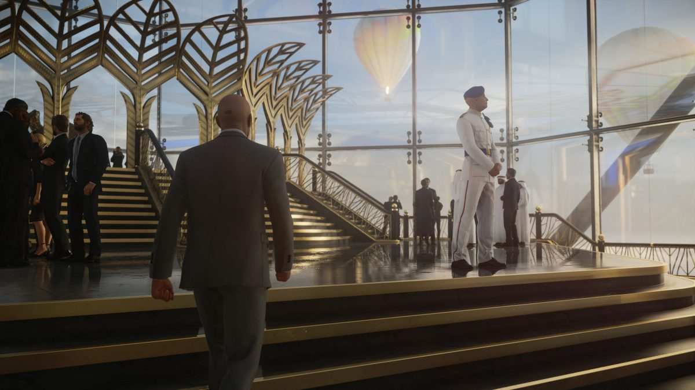
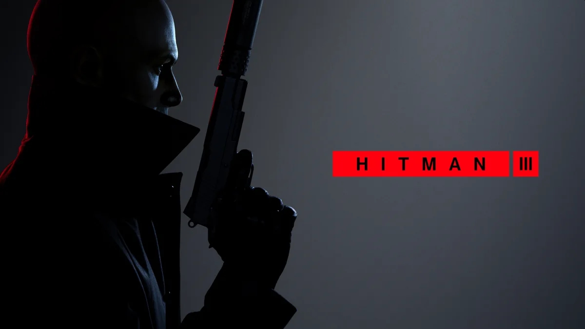

HITMAN III
Ever since 2016 Hitman has been one of my most favourite games, and throughout the years the game has captivatingly improved, in a sense of making the in game experience better rather than changing or updating it. And after years of working the new Hitman 3 is something that can be referred to as perfect. Not in a way of graphics or any fancy details but in a way that it provides the best Hitman experience yet.
So Hitman 3 is the last game in the World of Assassination trilogy, which started with 2016’s Hitman reboot.If you’re not afraid, It’s a sandbox stealth action game where players head to a variety of open-ended locations and take on assassination missions. Players once again take on the role of Agent 47, a ruthless killer with a barcode on the occipital region who travels the world carrying out hits.

Hitman 3 this time starts off with 6 impressively big and detailed maps. Now 6 maps sounds a bit smaller in quantity but this is how things go in these trinity, levels are designed mostly to be played a few times at least 3 to 4 times in a different course of action, I’ll get to that pretty soon.
Now the maps this time are a bit more polished than the previous 2 series, the story is not something astounding but it works well balanced with everything around. So the game starts off with parachuting on the tallest building in the world in Dubai and so things get going on sweet in the height, then the following map redirects to a manner in UK where a notable mission is done in a disguise of a detective and things then fly off to Berlin, German where you get to hunt down your opponents down in a chock-full 24/7 nightclub and then to China with all kinds of distinctive neon lighting giving a cyberpunk vibe throughout the journey and then straight to Argentina in a vineyard that strikes me about that the game is not open world and then to finale in Romania where it has been a playable location in some of the earliest Hitman titles, so it looks like Hitman 3 is bringing things back full circle.

So the level designs are what that makes Hitman actually Hitman and I’m really a big fan of it. So the levels are designed in a way with tons of different courses and it is just so impossible to get them in one play or even a couple, it’s just there way of flexing their ability to change the pace of the game with decision and it’s replays are often so like playing in a different formation in the same team if this actually does make sense.
So the game also got some new stuff all around like the game introduces a new camera that can open locks and analyze performance with the return of post-mission Play Styles that are awarded based on how you complete missions. And also on next-gen consoles, HITMAN 3 will support 4k visuals, 60 fps, HDR and faster loading times.
As I mentioned earlier that the story this time is a bit better than previous version, well that's quite true in all of the situation, but cutscenes are a bit weaker, as most of the time it’s Diana and agent 47 as either way new characters have less involvement in cutscenes and some of the killing decision have the same consequences like while you sabotage someone from the back, the body is most of the time hidden in a cupboard or something likely but this is what I got all over the game and this obviously not goes always but tho sometimes.

Also worth noting that there is a pretty good VR version which is to date exclusive to PSVR only but there is a good chance that this will also be available on PC soon and also players who have owned the previous version of the trilogy can bring their maps and progress up over in Hitman 3 absolutely free which is again another very good deal for players who have been old to this series. And also worth noting that the game is dropping over at $59.99 for all the platforms lined over the screen and also you can get the deluxe edition for some additional bucks.
Thank You For Reading See You In My Videos